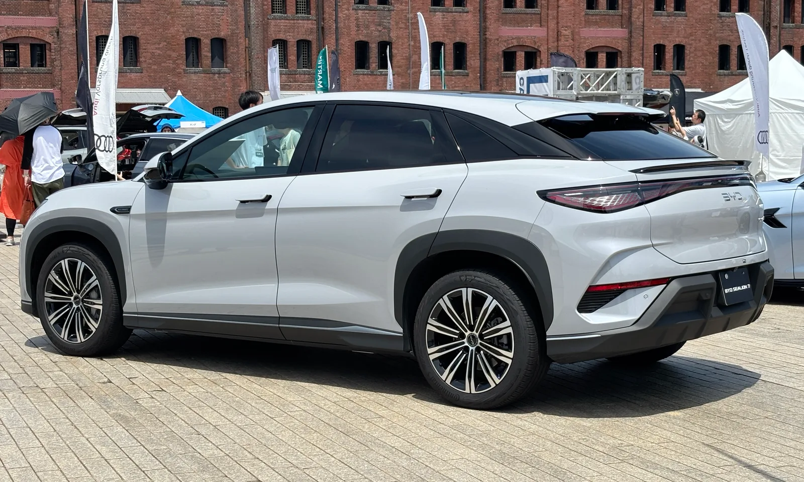
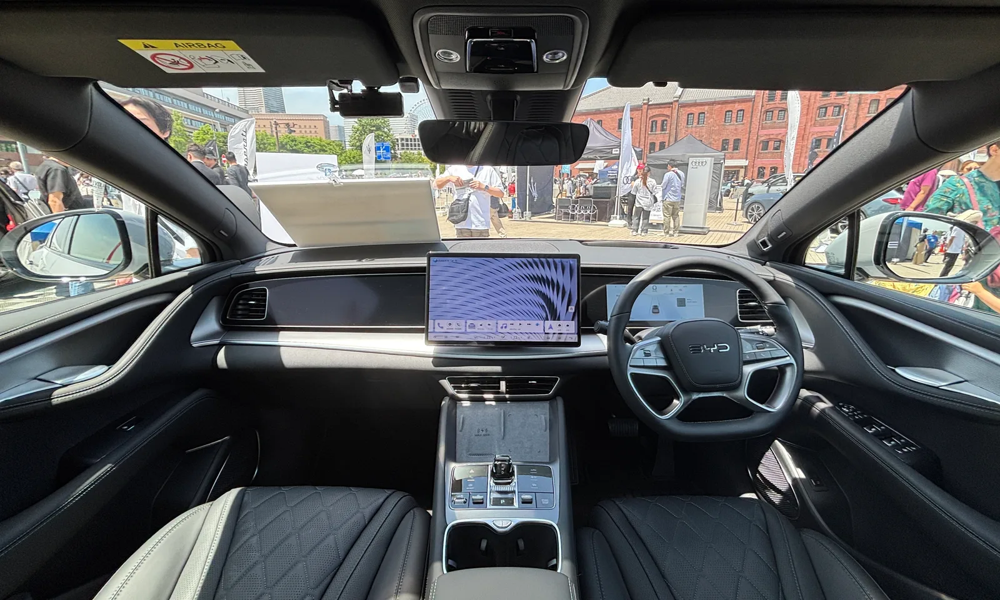

▲ BYD 씨라이언 7. 쿠페형 루프라인을 가진 중형 전기 SUV다 ⓒ Wikimedia Commons
중국 전기차를 평가할 때 가장 자주 나오는 표현이 '가성비'입니다. 값이 싸다는 이야기이고, 뒤집으면 다른 부분은 감수해야 한다는 뜻이기도 합니다.
씨라이언7 시승에서 가장 많이 언급된 항목은 값이 아니라 승차감이었습니다.
1. 가장 많이 언급된 것은 승차감이었습니다
시승 기자는 "가장 놀란 부분은 승차감"이라고 평가했습니다. 근거로 든 것은 주파수 감응형 댐퍼입니다.
도심에서 과속방지턱이나 요철을 지날 때 안정적이고 부드럽다는 것이 평가의 요지이며, 고속 안정성도 탁월하다고 언급됐습니다.
📍 주파수 감응형 댐퍼란
일반 쇼크업소버는 움직이는 속도에 따라 감쇠력이 결정됩니다. 주파수 감응형 댐퍼는 여기에 입력이 반복되는 빈도를 하나 더 봅니다.
과속방지턱처럼 크고 드문 입력에는 단단하게, 노면 잔진동처럼 작고 잦은 입력에는 부드럽게 반응합니다. 전자 제어 서스펜션 없이 기계 구조만으로 두 성격을 나누는 방식이라 원가 부담이 작습니다.
전기차는 배터리 무게 때문에 승차감을 만들기가 까다로운 차종입니다. 무거운 차체를 잡으려면 서스펜션을 단단하게 해야 하고, 그러면 요철에서 거칠어집니다. 이 지점을 기계식 해법으로 풀었다는 것이 평가의 배경입니다.
2. 숫자로 보면
| 항목 | 내용 |
|---|---|
| 배터리 | 82.56kWh LFP 블레이드 |
| 주행거리 | 상온 398km · 저온 385km |
| 구동 | 후륜 싱글모터 |
| 출력 | 230kW (약 313마력) |
| 토크 | 38.7kgf·m |
| 0→100km/h | 6.7초 |
| 크기 | 4,830 × 1,925 × 1,620mm |
| 휠베이스 | 2,930mm |
주목할 숫자는 저온 385km입니다. 상온 398km와의 차이가 13km에 그칩니다. 겨울철 주행거리 하락이 전기차의 대표적 약점이라는 점을 감안하면 눈에 띄는 수치입니다.

▲ 씨라이언 7 후면. 쿠페형 루프에 일자형 리어램프를 얹었다(일본 사양) ⓒ Kazyakuruma, Wikimedia Commons (CC0)
3. 200만 원의 내용
기본형과 플러스의 차이는 200만 원입니다. 그 값으로 무엇이 들어오는지가 이 차의 실질적인 선택 기준입니다.
| 항목 | 내용 |
|---|---|
| 시트 | 나파가죽 시트 |
| 디스플레이 | 12인치 HUD |
| 운전석 | 메모리 기능 · 4방향 전동 허리받침 · 전동 레그서포트 |
| 오디오 | 12스피커 다인오디오 |
동력계와 배터리는 동일합니다. 성능이 아니라 실내 체감 사양에만 차이가 있습니다. 국산 준대형 세단에서 200만 원짜리 옵션 패키지가 대체로 무엇을 담는지와 비교해보면 판단이 쉬워집니다.

▲ 씨라이언 7 실내. 회전형 센터 디스플레이가 중앙에 놓인다(일본 사양 우핸들) ⓒ Kazyakuruma, Wikimedia Commons (CC0)
4. 아쉬운 지점도 있었습니다
시승에서 지적된 부분은 회생제동입니다. "테슬라나 현대기아의 강력한 회생제동과는 거리가 멀다"는 평가였습니다.
회생제동이 약하면 원 페달 주행이 어렵습니다. 가속 페달에서 발을 떼도 감속이 충분치 않아 브레이크를 함께 써야 합니다. 국산 전기차에 익숙한 운전자라면 처음에 이질감을 느낄 수 있는 부분입니다.
📍 회생제동 강도는 취향의 영역이기도 합니다
강한 회생제동은 효율과 원 페달 주행에 유리하지만, 뒷좌석 탑승자가 울렁임을 느끼기 쉽습니다.
반대로 약한 회생제동은 내연기관차와 비슷한 감각을 줍니다. 전기차가 처음인 구매자에게는 오히려 이쪽이 편할 수 있습니다. 단점으로만 읽을 필요는 없습니다.
5. 상대는 모델 Y입니다
씨라이언7이 놓인 자리는 분명합니다. 수입 중형 전기 SUV이고, 이 구간에서 씨라이언7보다 많이 팔리는 차는 테슬라 모델 Y가 사실상 유일하다고 언급됐습니다.
| 항목 | 씨라이언7 |
|---|---|
| 가격대 | 4,490만~4,690만 원 |
| 체급 | 전장 4,830mm 중형 SUV |
| 강점 | 승차감 · 저온 주행거리 방어 · 사양 구성 |
| 약점 | 회생제동 강도 · 브랜드 인지도 |

▲ 테슬라 모델 Y. 수입 중형 전기 SUV 시장에서 씨라이언7이 겨냥하는 상대다 ⓒ Wikimedia Commons
6. LFP 블레이드라는 선택
배터리는 LFP(리튬인산철) 블레이드입니다. BYD가 자체 개발한 구조로, 셀을 길고 납작하게 만들어 모듈 단계를 생략하는 방식입니다.
LFP는 NCM 대비 에너지 밀도가 낮은 대신 열 안정성이 높고 원가가 쌉니다. 수명 측면에서도 유리합니다. 82.56kWh를 담고 398km를 내는 수치는 이 특성을 감안해 읽어야 합니다.
저온 385km가 눈에 띄는 이유도 여기에 있습니다. LFP는 일반적으로 저온에 약한 것으로 알려져 있는데, 이 차의 인증치는 상온과의 격차가 크지 않았습니다.
7. 정리
BYD 씨라이언7은 기본형 4,490만 원, 플러스 4,690만 원입니다. 82.56kWh LFP 블레이드 배터리로 상온 398km, 저온 385km를 인증받아 두 값의 차이가 13km에 그칩니다.
후륜 싱글모터가 230kW(약 313마력)를 내고 0→100km/h는 6.7초입니다. 시승에서 가장 높은 평가를 받은 항목은 주파수 감응형 댐퍼에서 비롯된 승차감이었고, 아쉬운 점으로는 약한 회생제동이 지적됐습니다.
플러스 트림의 200만 원은 성능이 아니라 나파가죽 시트·12인치 HUD·운전석 메모리·12스피커 다인오디오 같은 실내 사양에 쓰입니다. 동력계와 배터리는 두 트림이 같습니다.